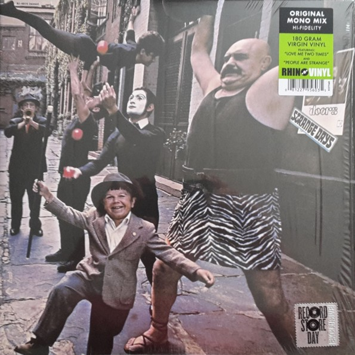

| |

|
|
The Doors: Strange Days
Rhino / Elektra mono reissue for Record
Store Day 2015 (April 2015)
'Strange Days' ... released in the Fall of 1967, as the Doors'
second album,
in the wake of that massive number one hit single that
helped shape the
'Summer of Love': 'Light My Fire' ... Extraordinary! But
the Doors were about
much more than having their hit song played over the
radio on end, a reality
brought forward by the debut album, a fact to be stressed
by its successor.
'Strange Days' ... I could never do a review without
getting a tad personal,
a step away from what has been written for over 40 years.
After all, it is
'Strange Days' ...
At some point in 1983, 'Strange Days' was the one record
that stood out for
me from the other music my late father was playing at the
time. Although I
hungrily picked up on two further albums from psychedelic
pop year 1967,
somehow it was the Doors' sound that my seven-year-old
ears were most
gravitated to. The others were 'Their Satanic Majesties
Request' by the
Rolling Stones, and the Beatles' masterpiece 'Sgt.
Pepper's Lonely Hearts
Club Band' ... I adored all of it, nothing at all
appeared old, weird or
uncomfortable about the music on those three albums. But
it was 'Strange
Days' that found its way into my bedroom the day I got my
own first record
player, and it just stayed there - I was hooked!
Fast forward 32 years and here is this reissue of the
rare mono mix, on 180
gram vinyl, a limited edition of 12.500 copies released
for Record Store Day
2015... A very fine product, in keeping with the original
1967 artwork as much
as possible. Over the many years there have been
remasters and re-remasters
of the album on both vinyl and compact disc, as well as
the '40th Anniversary'
remix that made its first appearance on the 'Perception'
box set in 2006. What
an amazing experience that was, to hear my all time
favourite album in this
new mix, with features added that had been mixed down for
the initial 1967
release. Some songs benefit from producer/engineer Bruce
Botnick's new
take on the album, others don't, but keeping in mind that
it wasn't to replace
the original master, it was and still is a great way of
listening to 'Strange
Days' in a different way. Eventually the '40th
Anniversary' remix did become
the standard master for the classic six studio album
catalogue on CD, a fact
neither Doors fans nor music fanatics in general are
happy about. A totally
different issue to be tackled in a future Doors Quarterly
feature... It's back to
the 2015 reissue for now...
Or is it?... Listening to today's mono reissue, many of
its assets wouldn't
have been this little a surprise had there not been the
'40th Anniversary'
editions. For example, the handclapping in 'Unhappy Girl'
isn't the great
revelation it would be for the listener familiar with the
original mix only.
And so it is for most of the album, there are hardly any
surprises left for
ears accustomed to the 2006 renovation works. This of
course doesn't
mean that the record is void of any added quality... On
the contrary!
Listening back to mono mixes of the 60's through today's
equipment
is quite revelatory, a field of interest well explored
with the larger half
of the Beatles' catalogue, its mono mixes reissued and
confided to both
vinyl and CD box sets in 2009. Footnote: for both the
Beatles and the
Doors, the production of records in both mono and stereo
came to a hold
in 1968, disputably the year in which stereo was adopted
as the
worldwide standard.
A brief zooming in on the differences between mono and
stereo as far as
'Strange Days' goes reveals that 'Love Me Two Times' and
'People Are
Strange' hardly differ in any way. In mono, the other 8
songs have a louder,
more upfront sound, more aggressive in places, less
subtle and less fragile
where deemed appropriate. "You're Lost Little
Girl" puts extra emphasis on
Robby Krieger's wailing, weeping guitar sound,
"Unhappy Girl" has the
aforementioned handclapping, and the sound effects on
"Horse Latitudes"
are louder, giving the piece an extra bit of dramatic
kick. Perhaps the track
that benefits most from the mono overhaul is 'My Eyes
Have Seen You'. With
both a slightly different bass opening and fade-out, the
instruments fly from
the speakers to hit you straight in the face! Closing
track "When the Music's
Over" has these different, often extra nuances that
make it very worthwile
listening to as a twin brother to its stereo version.
To wrap things up... Does 'Strange Days' in mono come
with a vast array of
surprises? No, it doesn't. Is it worth picking up, and
would I recommend it?
Yes absolutely! Although probably for collectors and
completists, for
audiophiles and lovers of the monaural sound only, any
serious fan of the
Doors should hear the album like this at least once!
Hopes are high for Record Store Day 2016... May
Elektra/Rhino consider
giving "Waiting for the Sun" the same
treatment. The mono master has
the rare alternate 'Wintertime Love' with a different
vocal track.
� Kevin Chiotis for the Doors Quarterly Magazine Online
- May 2015
|
|